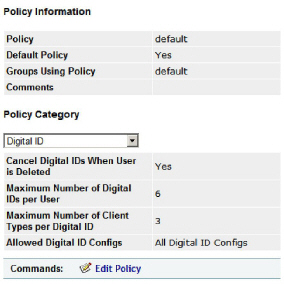

|
IdentityGuard Server 12.0 Administration Guide |
|
IdentityGuard Server 12.0 Administration Guide |
There are a few digital ID policies in Entrust IdentityGuard which have default settings. Review the defaults and change them if required. Follow the instructions below.
To configure digital ID policies
1. Log in to the Entrust IdentityGuard Administration interface as the administrator.
 On the
Windows computer where Entrust IdentityGuard is installed
On the
Windows computer where Entrust IdentityGuard is installed
2. From the top menu, click Policies.
3. Click the policy you want to view, for example, default.
4. Under Policy Category, select Digital ID.
5. A list of digital ID policies appears. The default settings are shown in the image below.

6. Click Edit Policy.
7. Change the policies. The policies are described in Digital ID policies.
8. Click Save Changes.
9. Click Done.
You have now configured the digital ID policies.